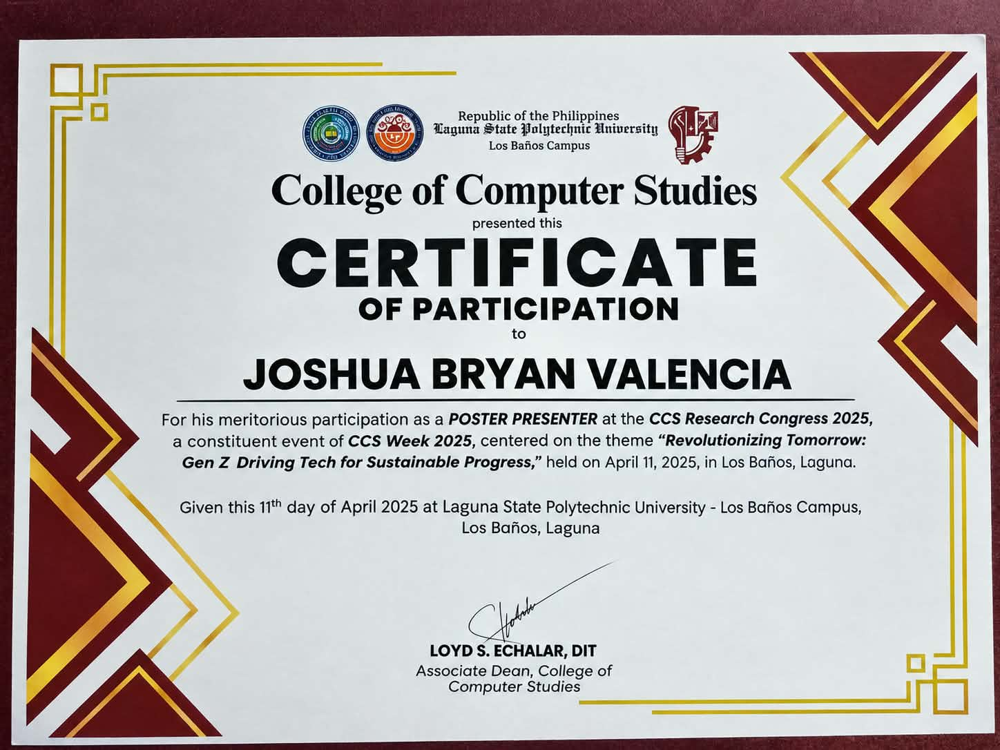
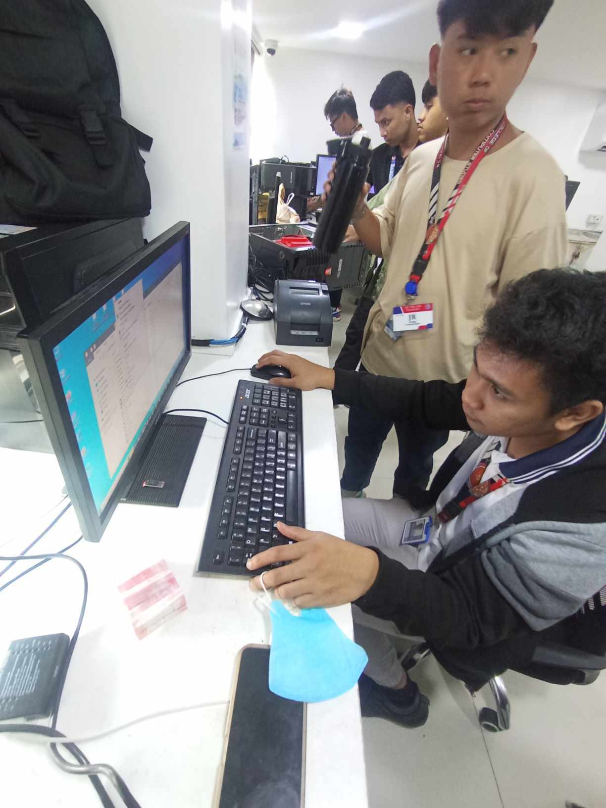
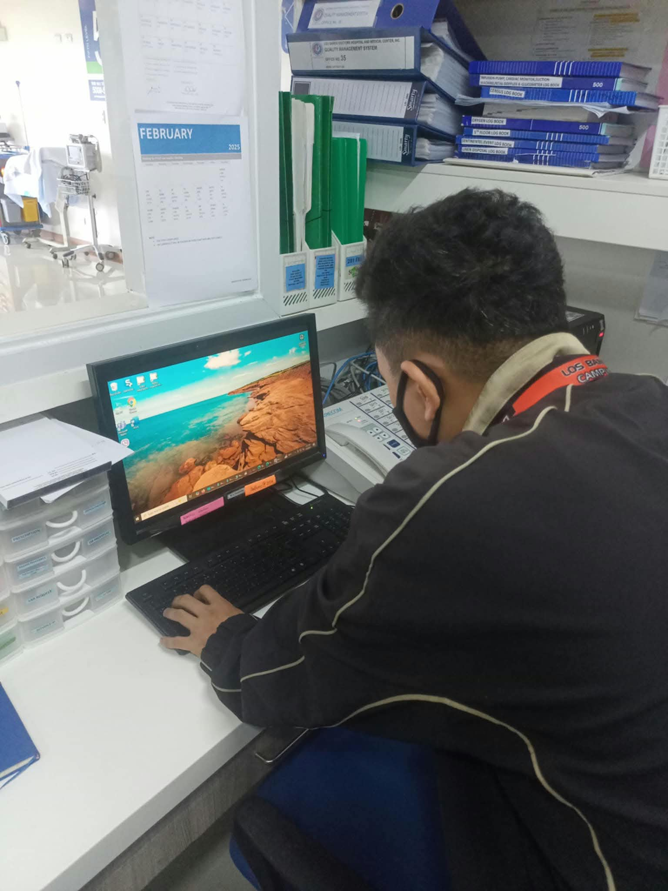
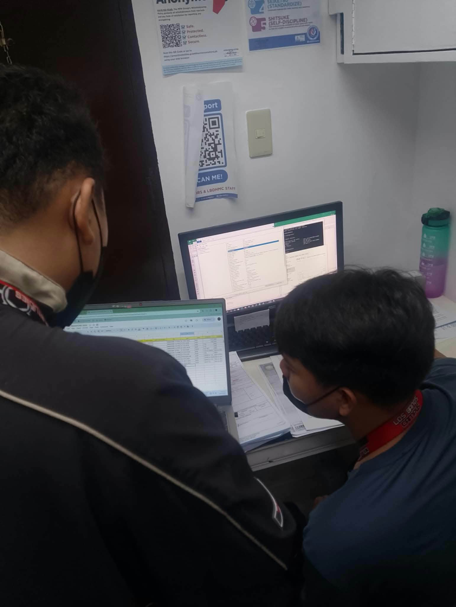
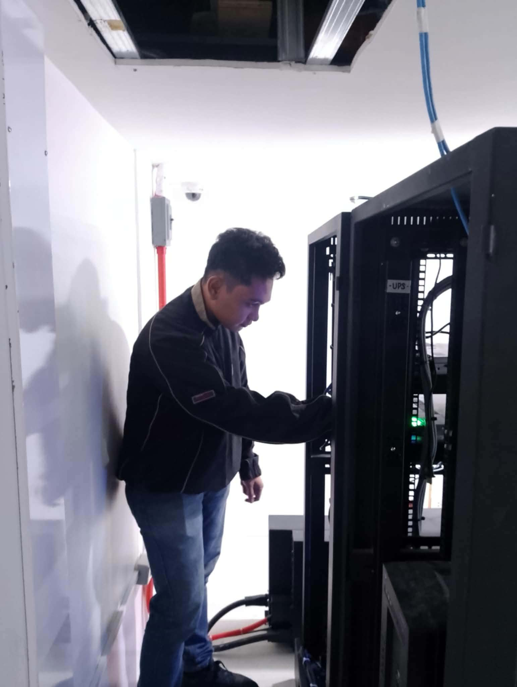

Chapter One
I’m Joshua Bryan N. Valencia, an IT professional with hands-on experience in technical support, hardware and software troubleshooting, and system setup. I have experience supporting users, preparing computer systems, setting up printers and basic networks, and resolving technical issues.
Alongside my IT skills, I have an interest in UI design and front-end development. I enjoy combining technical knowledge with creativity to create clean, responsive, and user-friendly digital experiences. I’m continuously learning and developing my skills to grow as an IT professional and contribute to practical technology solutions.
Chapter Two
Chapter Three
Bachelor of Science in Information Technology
Laguna State Polytechnic University, Los Baños Campus
2021 – 2025

CCS Research Congress 2025
Poster Presenter
Click certificate to viewAcademic Project
ChloroWatch
Water quality monitoring system developed as part of the Bachelor of Science in Information Technology program.
View Research PDFChapter Four
IT / MIS OJT
Los Baños Doctors Hospital and Medical Center
February – May 2025




Chapter Five
Web Design • UI Design • Responsive
A conceptual rental and room finder website created to demonstrate clean, responsive, and user-friendly web interface design.
Web System Dashboard
A college-developed water quality monitoring system designed to present environmental data through an easy-to-understand dashboard.
Chapter Six
Use the arrow keys or swipe to turn the page